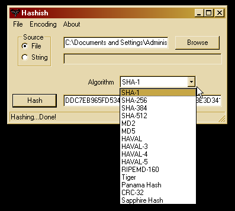

A file and string hashing untility for Win32, Mac, Unix...
Written by Jesse Lovelace - jesse at aslogicsys dot com
Freeware with source distributed under the GPL
Screen shot 1:
Screen shot 2:

Features: